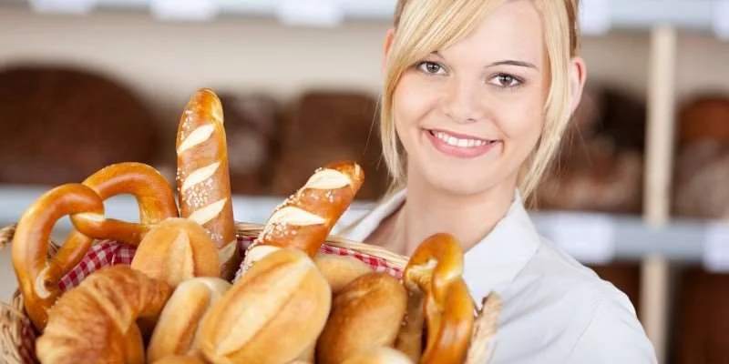
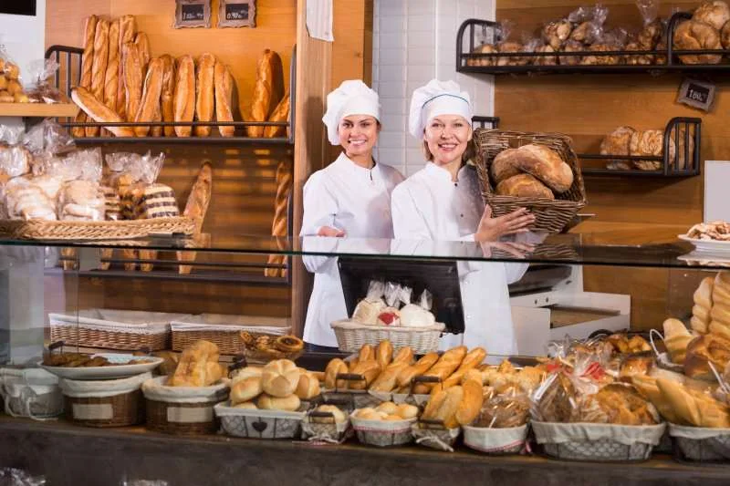
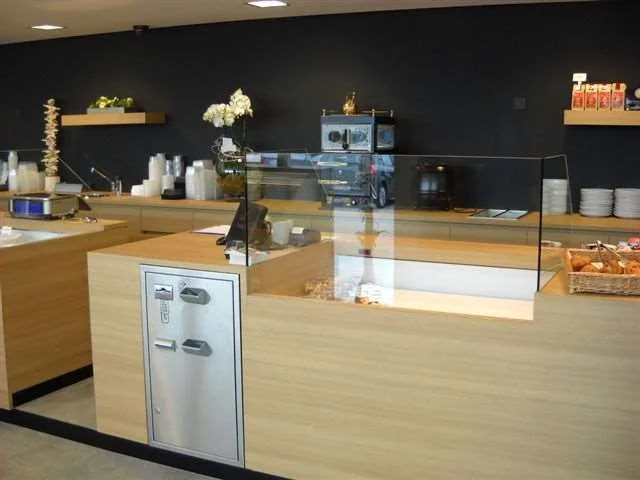

KassaKompas · Bakkerijen & patisserie
Kassasystemen voor bakkerijen en patisserie
Van de eerste broodjes tot de drukte op zondagochtend: een passende bakkerijkassa helpt je verkopen, bestellingen en betalingen overzichtelijk te houden. KassaKompas denkt mee over een werkbare opstelling voor jouw winkel en team.
Persoonlijk advies voor Belgische bakkers, patissiers en bakkerijen met verbruikszaal.
Vlot bedienen tijdens de spits
Een bakkerijkassa die aansluit op je dagelijkse ritme.
Brood, koffiekoeken, gebak en seizoensproducten moeten herkenbaar terug te vinden zijn. Een logische schermindeling en duidelijke afspraken voor je medewerkers maken het gemakkelijker om klanten consequent te bedienen.
Van een betaalbare instapkassa tot een uitgebreid professioneel kassasysteem: KassaKompas bekijkt welke functies en toestellen je vandaag nodig hebt, en welke uitbreidingen later zinvol kunnen zijn.

Overzicht aan de toonbank
Je assortiment duidelijk in beeld.
Stem productgroepen, prijzen en sneltoetsen af op de manier waarop jouw team verkoopt. Bespreek ook hoe je een bon in wacht zet of een verkoop tussen medewerkers laat overnemen.
- Artikelen en prijzen beheren
Een werkbare indeling voor je vaste assortiment, tijdelijke producten en aanvullingen. - Scannen en etiketteren
We bekijken barcodescanners en eventuele etikettenoplossingen voor de producten die je verkoopt. - Verkopen op gewicht
Bespreek een mogelijke weegschaalkoppeling. We controleren de apparatuur, software en vereisten voor de beoogde werking.
Werk je met meerdere kassa’s? Dan onderzoeken we hoe artikelgegevens, gebruikers en verkoopinformatie binnen de gekozen oplossing kunnen samenwerken.
Bestellen en afhalen
Van taartbestelling tot laatste afrekening.
Een verjaardagstaart, een bestelling voor het weekend of een terugkerende klantbestelling vraagt meer dan een losse verkoop. Maak duidelijk wat besteld is, wanneer het klaar moet zijn en welk bedrag nog openstaat.
Bestellingen bewaren en opvolgen
We bekijken hoe je klantbestellingen opslaat, wijzigingen verwerkt en openstaande bedragen opvolgt. Ook een voorschot, betaling bij afhaling of herhaalbestelling hoort bij de praktijksituaties die je best vooraf test.
Baklijsten en voorbereiding
Wil je bestellingen bundelen tot een baklijst? We onderzoeken welke productieoverzichten je software ondersteunt en hoe producten, aantallen en afhaalmomenten worden samengebracht.
Een duidelijke overdracht naar je team
Stem productnamen, aantallen, opmerkingen en afhaalmomenten af op je voorbereiding. Zo weet je team welke informatie nodig is bij het maken en meegeven van een bestelling.
Online bestellen als aanvulling
Een eigen webshop of besteltoepassing kan je klanten toelaten vooraf te bestellen. We onderzoeken de aansluiting op je kassa en de verwerking van betaalstatussen, afhaalmomenten en aanpassingen.
Welke gegevens automatisch kunnen worden uitgewisseld, hangt af van de gebruikte systemen. We bevestigen de mogelijkheden vóór we een koppeling voorstellen.
Bekijk webshops en online bestellen →Contant en elektronisch betalen
Een betaalproces dat past bij je toonbank.
Een gekoppelde betaalterminal kan manuele bedraginvoer beperken. Automatische geldverwerking kan het aannemen van contant geld en uitgeven van wisselgeld ondersteunen. We bespreken beide mogelijkheden op basis van jouw werkruimte en betaalstromen.
Cashkeepers en automatische geldverwerking
Een geschikte opstelling kan het rechtstreeks aanraken van cash beperken en je medewerkers helpen bij het verwerken van betalingen. We bekijken plaatsing, bediening, koppeling en dagelijkse opvolging.
Niet elke geldverwerkingsmodule of betaalterminal werkt met elke kassa. KassaKompas controleert de concrete toestellen, provider en softwareversies vóór je een keuze maakt.
Ontdek betaalterminals en geldverwerking →
Bakkerij met verbruikszaal
Ook koffie en gebak aan tafel serveren?
Een bakkerij met zitplaatsen combineert winkelverkoop met bediening. Een passende tafelindeling en duidelijke doorsturing van bestellingen kunnen helpen om toonbank, bar en keuken op elkaar af te stemmen.
We bespreken tafelbediening, eventuele mobiele invoer en de verwerking van afhaalverkoop naast verbruik ter plaatse. Laat de fiscale inrichting en eventuele GKS-verplichting beoordelen op basis van jouw activiteiten.
Bekijk ook onze oplossingen voor koffiebars →Beheer en ondersteuning
Een oplossing die je zelf begrijpt.
Bespreek wie artikelen mag aanpassen, welke verkoop- en kortingsoverzichten beschikbaar zijn en hoe je openstaande rekeningen opvolgt. Gebruik een demonstratie om je eigen verkoopmomenten en bestellingen te testen.
Bij starten of vernieuwen helpt KassaKompas je apparatuur, software en begeleiding afwegen. Maak vooraf afspraken over inrichting, installatie, uitleg voor je team en ondersteuning.
Praktische antwoorden
Veelgestelde vragen over bakkerijkassa’s.
Welke kassa past bij een bakkerij of patisserie?
Kijk naar je assortiment, piekmomenten, aantal medewerkers en de manier waarop je bestellingen aanneemt. KassaKompas helpt je een betaalbare instapkassa of een uitgebreide professionele opstelling kiezen. Test de bediening met producten en bestellingen uit je eigen zaak.
Kan ik een bestelling bewaren en een voorschot registreren?
We bekijken hoe de gekozen kassasoftware bestellingen, voorschotten en resterende bedragen verwerkt. Test ook wijzigingen, afhaling en een herhaalbestelling, zodat de werkwijze duidelijk is voor je medewerkers.
Kan mijn bakkerijkassa aan een weegschaal worden gekoppeld?
Dat hangt af van de weegschaal, kassasoftware en de beoogde werking. We controleren de concrete combinatie en bespreken de vereisten voor verkoop op gewicht voordat we een koppeling voorstellen.
Werkt de kassa met een cashkeeper of automatische geldverwerking?
We onderzoeken welke geldverwerkingsmodule aansluit op je kassasoftware en werkproces. Bij een geschikte configuratie kan het systeem contant geld verwerken en wisselgeld uitgeven. De precieze werking en verantwoordelijkheden spreken we vooraf af.
Kan ik online bestellingen samen met winkelbestellingen verwerken?
Dat bekijken we voor je webshop of bestelplatform en de gekozen kassasoftware. Belangrijk zijn de overdracht van producten, afhaalmomenten, betaalstatussen en wijzigingen. Niet elke koppeling is standaard beschikbaar.
Kan ik ook klanten aan tafel bedienen?
Met een passende horeca-uitbreiding kun je tafelbediening organiseren. We bespreken je tafelindeling, invoer van bestellingen en doorsturing naar bar of keuken. De fiscale inrichting voor afhalen en verbruik ter plaatse stem je af met je boekhouder.
Kan ik baklijsten maken op basis van bestellingen?
We bekijken of de gekozen bakkerijsoftware bestellingen kan bundelen tot een productie- of baklijst. Bespreek welke producten, aantallen en afhaalmomenten je daarop nodig hebt, zodat de lijst aansluit op je voorbereiding.
Wat kost een kassasysteem voor een bakkerij?
De prijs hangt af van het aantal werkposten, apparatuur, softwaremodules en koppelingen. Vraag een voorstel waarin eenmalige kosten, terugkerende kosten en ondersteuning apart vermeld staan.
Persoonlijk advies en ondersteuning
Welke kassa past bij jouw bakkerij?
Vertel ons over je assortiment, bestellingen en de werking aan je toonbank. KassaKompas denkt mee over een passende bakkerijkassa en de uitbreidingen die je nodig hebt.
← Terug naar alle retailsectoren